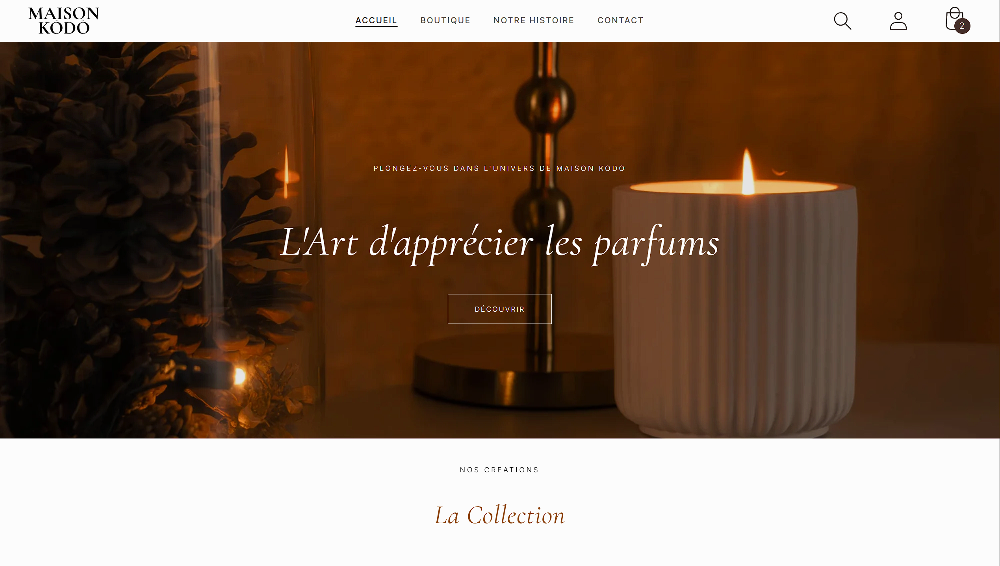
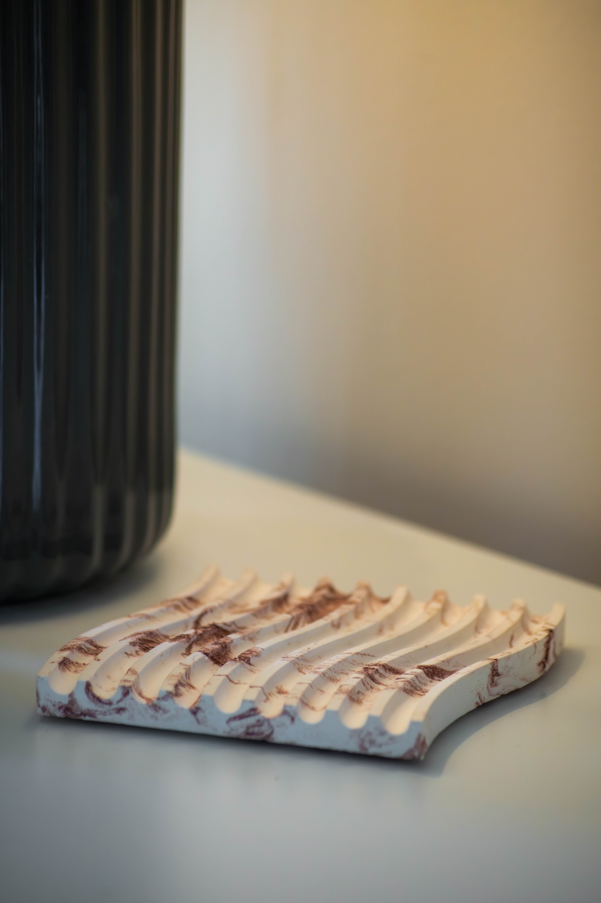
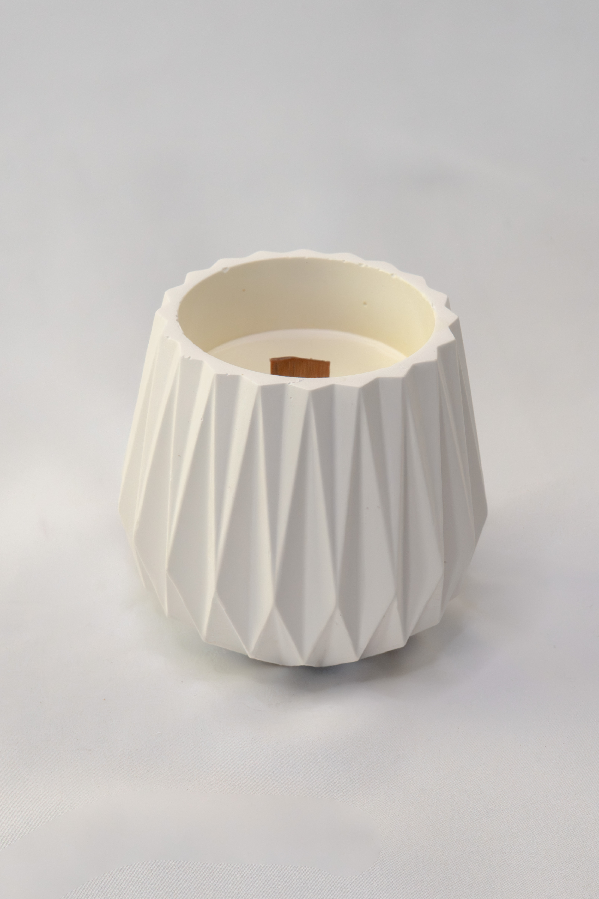

MAISON KŌDŌ
L'artisanat d'intérieur sublimé par le digital.
Refonte d'identité, direction artistique photo et déploiement E-commerce.

01 Le Challenge
Professionnaliser une passion
Maison Kōdō est née d'un savoir-faire artisanal passionné. L'enjeu était de transformer une activité gérée de manière informelle sur Instagram en une marque haut de gamme, sobre et élégante.
Ma mission a porté sur deux piliers critiques : créer une vitrine e-commerce automatisée pour gagner en efficacité opérationnelle et réaliser une imagerie produit qui reflète la qualité premium des créations.
02 Direction Artistique & Shooting
Pour Maison Kōdō, l'image est le premier vecteur de vente. J'ai orchestré le shooting produit en privilégiant une ambiance épurée et "lifestyle".


Le travail de post-production a consisté à harmoniser les teintes pour obtenir un rendu "classe/presque luxe". L'objectif était de mettre en valeur les techniques de moulage et de façonnage tout en conservant une douceur visuelle propre à l'univers du bien-être.
03 Architecture E-commerce & Expertise Shopify
Le cœur technique du projet a été la création du site maisonkodo.fr. Ce projet a nécessité une autoformation intensive sur l'écosystème Shopify afin de maîtriser les subtilités de la plateforme et l'intégration de plugins spécifiques.
Maîtrise Technique
Self-Taught ExpertiseApprentissage & Plugins
J'ai dû m'autoformer pour configurer les plugins de paiement sécurisé (Apple Pay, PayPal) et les outils de logistique. Cette autonomie m'a permis d'implémenter des solutions sur mesure comme la gestion des étiquettes d'envoi.
Automation
Backend EfficiencyGain de temps
Mise en place d'une automatisation complète pour la création des fiches clients et la gestion des stocks, répondant directement au besoin de professionnalisation de la marque.
04 Résultats & Impact
Grâce à cette double approche technique et créative, Maison Kōdō dispose désormais d'un outil de vente performant et d'une identité visuelle forte. Ce projet démontre ma capacité à m'approprier rapidement de nouveaux outils complexes pour répondre à des besoins business concrets.